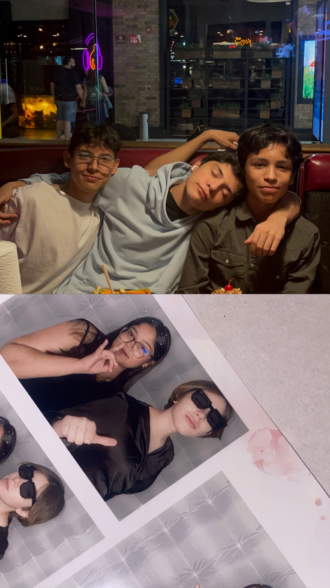

My FriendsThe people who make me laugh every time! |
|
IntroductionMy friends are my safe haven. They are the ones who have earned my trust and support over time. Honestly, my true friends can be counted on the palm of my hand, but that is what makes them special. They are a small yet meaningful part of my life, and here is a glimpse of who they are. |
|
My Friends
He truly knows me. He's been there for me since day one, and even my mother loves him! I see him as my "lil bro." I genuinely hope he gets everything he desires and finds exactly what he deserves in life. He is one of those friends who makes life better just by being there. We grew up together. They have always been there for me in every new stage of life, and now that we do not see each other as often, I realize it is a true friendship. We do not need constant contact, but when we reconnect, everything is just as pure and real as it has always been. She is happiness and guaranteed laughter. I am not sure when we became friends, but I know that I hope our bond lasts forever! |

Laughing together through every moment! |
What My Friends Mean to MeMy friends are an escape from all the noise around me. They are the group of people with whom I can be myself. Even in silence, everything feels right. With the right people around, life becomes brighter. "If you ever find yourself stuck in the middle of the sea, I'll sail the world to find you." — Bruno Mars, "Count on Me" |
|